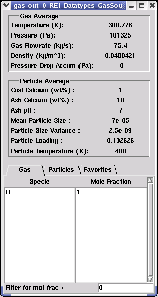
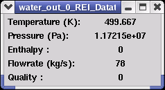

|  | GasBy right-clicking on an inlet/outlet port (viewing inlet/outlet fluid properties), one can view a fliud's characteristics as it flows between modules. This screen details characteristics of the gas datatype. The first section details properties such as temperature, pressure, flowrate, and density of the gas itself. The pressure drop (Accum) displays the accumulative change in pressure traced from the gas source until the given position within the network. The next section details properties of the solid impurities imbedded within the gas stream (i.e. coal, char, water, etc.) The bottom section allows the user to view gas and particle concentrations. Components are listed on the left with corresponding decimal mole fractions shown on the right to illustrate concentration. The favorites folder allows the user to specify which components to display. Also, the filter for mol-frac < line allows the user to specify that it would like only components above a certain molar fraction to be displayed. |
|  | WaterThis screen details the characteristics of water between modules within a blue port connector. |